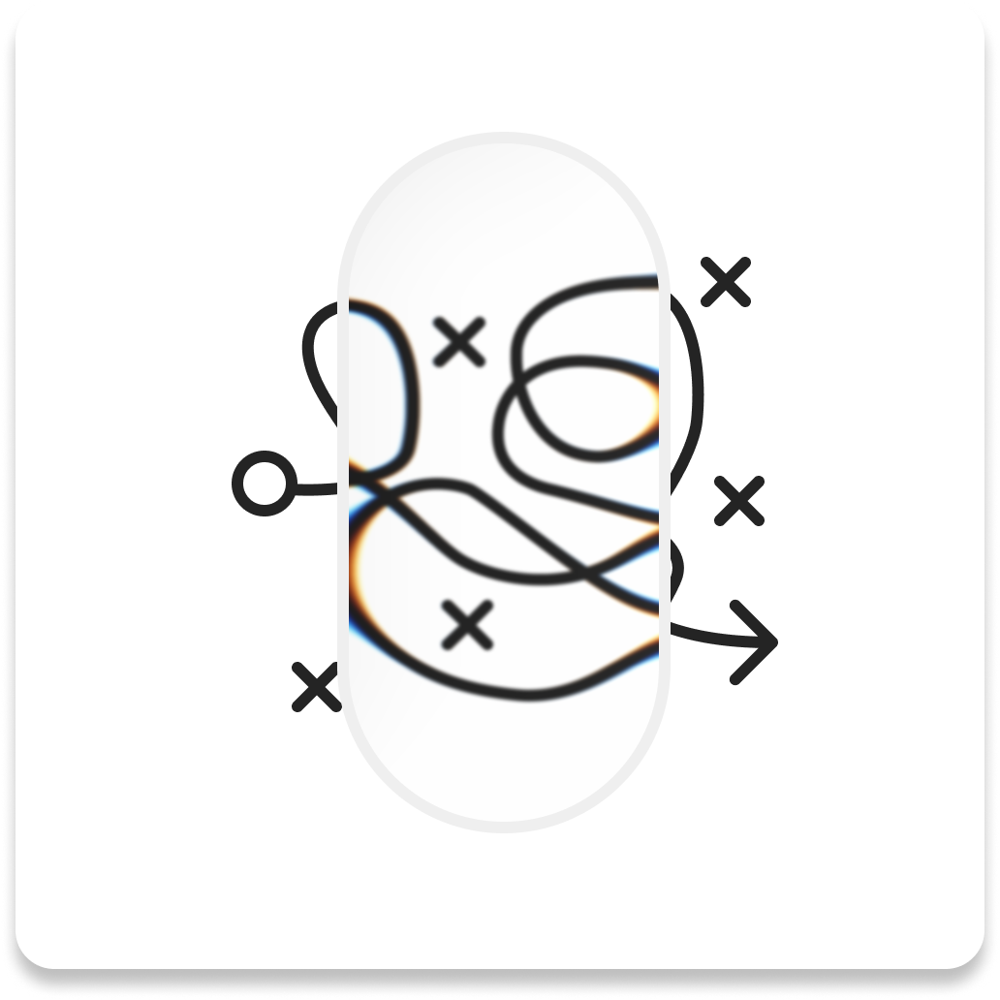

jobs are short.
careers are long.
I started as an engineer, pivoted to industrial design, and spent the last decade building design systems for enterprise software.
After a Masters in Industrial Design at Chalmers in Sweden — with internships at Volvo and Mercedes-Benz — I moved into digital product design. I joined Altair, now part of Siemens, as a design subject matter expert and eventually led the company's design system, Unity, from zero to enterprise-wide adoption. Along the way I worked with clients including Under Armour, Wilson Golf, and Tervis on interface and systems work.
In 2024, I completed an MBA at UC Berkeley Haas — which sharpened my instinct for where design creates business value.
Today I'm VP of Design Systems at JPMorganChase, leading design infrastructure for Global Banking. I built the firm's first agentic design system — ADS — alongside a full design system context layer for Spec Driven Design (SDD), a methodology that brings structured, AI-ready specifications into the design workflow. I also created an internal icon design web app that significantly shortened icon delivery cycles. Beyond tooling, I've led CIB-wide AI enablement sessions in partnership with the Experience Design leadership team, helping designers understand and apply AI capabilities with both confidence and craft.